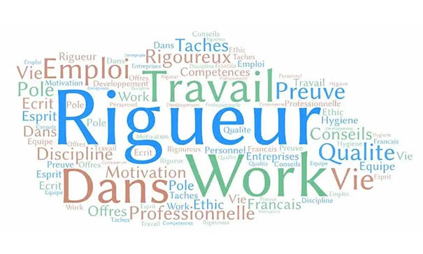
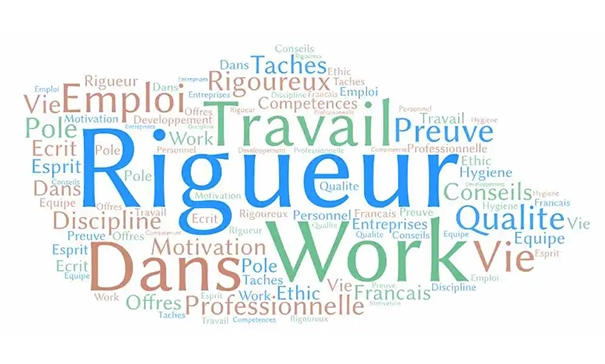

CASCADING STYLE SHEETS
"L’harmonie visuelle ne tient pas qu’au contenu, mais à la façon dont il est présenté."
Maîtriser CSS, c’est bien plus que simplement styliser une page web : c’est savoir structurer,
embellir et optimiser l’affichage d’un site pour une expérience utilisateur fluide et agréable.
Grâce à cette compétence, je peux transformer un simple HTML brut en une interface moderne et
engageante, en jouant sur les couleurs, les typographies, les animations et la disposition des
éléments.
Avec CSS, je sais adapter un design à tous les écrans grâce aux media queries et aux techniques de
mise en page comme Flexbox et Grid, garantissant ainsi un rendu responsive et accessible sur tous
les appareils. Je maîtrise également les animations et transitions CSS, ajoutant des effets subtils
qui rendent l’interaction plus intuitive et dynamique.
Cette compétence me permet de donner vie aux interfaces, en assurant à la fois cohérence, lisibilité
et esthétisme. Que ce soit pour un site vitrine, une application web ou une plateforme complexe, CSS
est un outil que je maîtrise pour concevoir des expériences numériques à la fois fonctionnelles et
attractives.


 
